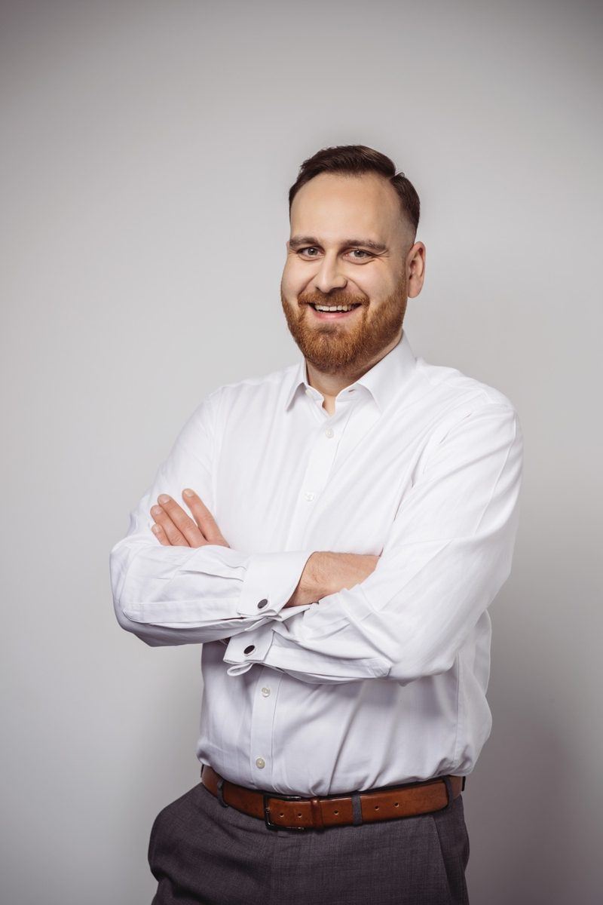

Wird die Stimmung merklich nervöser?
Besprechungen werden kürzer, Rückfragen schärfer, Termine rutschen leise.
Für Projekte, die stocken, kippen oder bald starten
Die Projektmanagement-Beratung von CEx bringt Projekte, die stocken oder in Schieflage geraten sind, zurück auf Kurs und gibt neuen Vorhaben von Anfang an Struktur. Wir prüfen Ihr Projekt im Audit zum Festpreis, übernehmen die Projektleitung auf Zeit oder steuern ganze Programme. Jedes Mandat endet an einem festen Termin. Unser Sitz ist Köln, im Einsatz sind wir im ganzen DACH-Raum.
Zwei, drei Sätze genügen; wir antworten werktags binnen 24 Stunden.
Bei der Projektmanagement-Beratung von CEx ist der erste Auftrag klein und schriftlich abgegrenzt; danach entscheiden Sie, wie es weitergeht.
Im Bericht ist alles grün, auf dem Flur heißt es, das Projekt laufe aus dem Ruder. Dabei heißt Grün: im Termin, im Ziel, im Budget. Stimmt eines nicht, ist Grün falsch.
Besprechungen werden kürzer, Rückfragen schärfer, Termine rutschen leise.
Oft wurde nur der Umfang stillschweigend verkleinert.
Dann hören Sie von Problemen erst, wenn sie am teuersten sind.
Ein Logistikunternehmen musste sein Kernsystem ablösen. Für das Programm waren 15 Mio. € über fünf Jahre eingeplant – doch es fehlte an Struktur, Transparenz und Entscheidungskompetenz.
Solche Lagen sind keine Ausnahme. Laut einer Befragung der Boston Consulting Group unter mehr als 1.000 Führungskräften aus 59 Ländern setzen nur 30 % der Unternehmen große IT-Programme vollständig wie geplant um (November 2024). Von 5.360 IT-Projekten überschritten gut 18 % ihr Budget um mehr als die Hälfte, und zwar im Schnitt um 453 % (Flyvbjerg u. a., Project Management Journal, 2025).
Zählen Sie Ihre Ja-Antworten.
Vermutlich fester Grund. Prüfen Sie regelmäßig, etwa mit unserer Checkliste „Projekt-Check: 12 Fragen vor dem nächsten Lenkungskreis“ (PDF). [folgt: PDF-Datei]
Erste Risse. Klären Sie jetzt, wer entscheidet und was Vorrang hat.
Wahrscheinlich Schieflage, auch wenn der Bericht Grün meldet. Holen Sie eine unabhängige Einschätzung ein, etwa von einer Projektmanagement-Beratung.
Im Projekt-Check legen wir offen, was fehlt und was geklärt werden muss – ganz gleich, welche Farbe der Statusbericht zeigt.
Wir übernehmen die Leitung eines Projekts oder Programms, mit klarer Verantwortung und klarer Entscheidungskompetenz.
Kein harter Schnitt: Wir nähern uns der neuen Arbeitsweise Schritt für Schritt an.
Wir gliedern das Programm in Themenblöcke nach Business Capabilities, also nach dem, was Ihr Unternehmen fachlich können muss, und legen diese Bausteine auf eine Roadmap.
Wir erarbeiten Soll-Bild und Anforderungen, schreiben aus und bleiben dabei unabhängig von jedem Anbieter.
Drei Mandate aus unserer Projektmanagement-Beratung im Detail, zwei weitere kurz gefasst.
Für die Online-Plattform liefen immer wieder kleinere Projekte, klassisch organisiert: Anforderung ins Tool, Kickoff, dann alles von vorne bis hinten durchgeplant. War ein Projekt zu Ende, blieben Tausende offene Punkte liegen, weil sich niemand mehr verantwortlich fühlte. Bis eine Lösung auf der Plattform lief, vergingen drei bis sechs Monate – Pläne und Roadmaps waren starr.
Einen harten Schnitt gab es nicht: Gemeinsam mit dem Team haben wir vorab entschieden, schrittweise über ein hybrides Modell und Kanban auf Scrum umzustellen. Der Scrum Master, der nicht von CEx kam, setzte den Wechsel mit viel Gamification um.
Der Kunde arbeitet heute vollständig in Scrum, mit zwei funktionierenden Scrum-Teams. Die Fehlerquote ist um 60 % gesunken, die Zahl unbearbeiteter Tickets um 30 %.
Die nächste Stufe wurde erst freigeschaltet, wenn das Feedback der Teams sie trug.
| Kennzahl | vorher | nachher |
|---|---|---|
| Arbeitsweise | klassisch (Wasserfall) | vollständig Scrum |
| Funktionierende Scrum-Teams | – | zwei |
| Fehlerquote | Ausgangswert | 60 % geringer |
| Unbearbeitete Tickets | Ausgangswert | 30 % weniger |
Ein Wechsel der Arbeitsweise im laufenden Betrieb gelingt, wenn das Team ihn mitentscheidet und sein Feedback das Tempo vorgibt.
„Dieser mehrstufige Prozess hat sich bewährt: Ganz gleich, aus welchem Modell man kommt, nähert man sich der Agilität behutsam an und schaltet Komplexität in Etappen frei. Das nimmt die Leute mit und lässt sie lernen, wie Dinge funktionieren.“
Das Kernsystem war weit über das Ende seines Lebenszyklus hinaus im Einsatz: kein Support mehr vom Anbieter, keine Entwickler mehr für die alte Technik, keine Skalierbarkeit. Dem Programm fehlten Struktur, Transparenz und Entscheidungskompetenz; agil war es nur zum Schein.
Zuerst haben wir festgehalten, was fehlte und was noch zu klären war. Dann haben wir Themenblöcke nach Business Capabilities gebildet, sie strukturiert abgearbeitet und den fachlichen Kern in eine neue Architektur überführt.
Die Systemausfälle sanken von rund 10 % auf unter 1 %, die technische Performance des Systems stieg um 500 %. Das Programm lief danach gut weiter.
| Kennzahl | vorher | nachher |
|---|---|---|
| Systemausfälle | rund 10 % | unter 1 % |
| Technische Performance des Systems | Ausgangswert | +500 % |
Transparenz braucht es auch nach innen: Wer mitarbeitet, muss wissen, was passiert und warum.
„Wir hatten es mit einer Scheinagilität zu tun. Am Ende geht es darum, Themenblöcke zu identifizieren und sie strukturiert abzuarbeiten, von oben nach unten oder von unten nach oben.“
Das zentrale SAP-System war uralt, die Prozesse nicht digital. Anträge für Langzeitkranke kamen per Post, wurden gescannt, wieder ausgedruckt und von Hand bearbeitet; der Rückstau lag bei drei bis vier Monaten. Je länger die Bearbeitung dauerte, desto öfter fragten Versicherte nach – zusätzliche Anliegen, die wieder Arbeit machten.
Nach der Analyse von Ist- und Soll-Zustand haben wir Ansatzpunkte und Arbeitspakete priorisiert, ein Zielbild mit Blick auf die Kostenersparnis entworfen und einen Plan mit Rollen und Terminen erstellt – und ihn umgesetzt.
Der Rückstau ist aufgelöst, Durchlaufzeit und Fehlerquote liegen nahezu bei null, Nachfragen wegen langer Bearbeitung gibt es keine mehr. Die Mitarbeiterin, die die Anträge bearbeitet hatte, blieb und kümmert sich heute persönlich um Kundenanliegen.
| Kennzahl | vorher | nachher |
|---|---|---|
| Rückstau | drei bis vier Monate | aufgelöst |
| Durchlaufzeit | mehrere Monate | nahezu null |
| Fehlerquote | – | nahezu null |
| Nachfragen und Zusatzanliegen wegen langer Bearbeitung | mit der Wartezeit steigend | null |
| Bearbeitung | Post, Scan, Ausdruck, Handarbeit | vollständig digital |
Der Hebel saß am Antragseingang, beim standardisierten Formular; heute könnte KI diesen Eingang für die Versicherten flexibler machen.
„Entscheidend war am Ende der digitale Schritt: Das Antragsformular kam per E-Mail, war maschinenlesbar und wurde vollständig digital verarbeitet. Keine KI, aber schon automatisiert, weil es ein standardisiertes Format ist.“
Kundenservice und Vertrieb arbeiteten mit Excel, alles manuell, ohne Omnichannel. Nach Bestandsaufnahme, Soll-Bild und Ausschreibung musste jeder Anbieter mit einem MVP beweisen, dass er seine Zusagen einhalten kann. Umgesetzt wurde in Sprints, gesteuert von einem Lenkungskreis, mit CEx als Scrum Master und Proxy Product Owner; danach folgte eine enge Betreuung (Hypercare), damit die Anwender das neue CRM annahmen.
Anwender mit direktem Kundenkontakt gehören früher an den Tisch, wenn Anforderungen entstehen.
Agile Transformation in einer international tätigen Organisation: fünf Jahre, vier Kontinente, rund 8.000 Beschäftigte.
Kundennamen nennen wir nicht; alle Angaben stammen aus den jeweiligen Mandaten.
So haben wir das Ablöse-Programm gegliedert – auf einer Roadmap, die das Management jederzeit lesen kann.
Themenblöcke nach den fachlichen Fähigkeiten bilden, die das Unternehmen braucht.
Für jeden Themenblock den fachlichen Kern herausarbeiten und in die neue Architektur überführen.
Die Bausteine nachvollziehbar auf die Roadmap legen, in der Reihenfolge, in der sie bearbeitet werden.
Wie weit bin ich gerade?
Was muss ich jetzt tun?
Was ist wie kritisch?
Was läuft gerade effizient – und was nicht?
In der BCG-Befragung nennen die meisten Führungskräfte einen fehlenden durchgängigen Gesamtplan und ein fehlendes aktives PMO als Ursachen, wenn große IT-Programme scheitern. Eine Roadmap aus Bausteinen setzt genau dort an: Sie ist der Gesamtplan, nach dem ein PMO das Programm steuert.
Die Roadmap bündelt die Themen, legt das Programm aber nicht auf Jahre fest.
„Der Schlüssel ist die Strukturierung auf Basis der Capabilities: Aus Management-Sicht ist nachvollziehbar, welche Bausteine bearbeitet werden müssen. Und aus dieser Bausteinsicht packe ich sie auf eine Roadmap.“
Sie schildern die Lage, wir sagen offen, ob wir helfen können.
ErgebnisEinschätzung und nächster Schritt
Dauer30–45 Minuten, kostenlos
Fehlt ein Beleg, ist das selbst ein Befund.
ErgebnisAufgabenpakete und eine Projektbeschreibung
Dauerbis zu einem festen Endtermin, Audit zum Festpreis
Der Lenkungskreis beschließt Maßnahmen, Fristen und Zuständigkeiten, und Sie entscheiden, ob wir umsetzen.
Ergebnisbeschlossene Maßnahmen
Dauereine Sitzung
Wir leiten Ihr Projekt auf Zeit oder begleiten Ihre Projektleitung im Tagesgeschäft.
Ergebnisein nachvollziehbarer Stand
Dauerbis zum festen Endtermin
Ihr Team übernimmt die Steuerung Schritt für Schritt.
Ergebniseigene Projektleitung oder eigenes PMO
Dauerzum Mandatsende
Der Statusbericht zeigt Grün, obwohl Verzug, Mehrkosten oder ein verfehltes Ziel absehbar sind.
Themen laufen nebeneinanderher, statt gebündelt und der Reihe nach abgearbeitet zu werden.
Entscheidungen bleiben liegen, weil unklar ist, wer sie treffen darf.
Wer Fehler nicht mehr zugibt und sich aus der offenen Kommunikation zurückzieht, dessen Projekt ist nicht mehr grün – und wird schnell rot.
Gerade in hierarchischen Organisationen redet die Leitung dem Team in jedes Detail hinein, statt die Entscheidungswege zu klären.
Deshalb beginnt eine Projektmanagement-Beratung bei uns meist mit dem Projekt-Check: Er zeigt, wo Transparenz, Struktur oder Entscheidungskompetenz fehlt.
Als Grund für gescheiterte IT-Großprogramme nennen mehr als 60 % der Befragten einen fehlenden Gesamtplan, 60 % ein fehlendes aktives PMO (BCG, November 2024). Wer komplexe Projekte steuert, meldet mit festem Regelwerk öfter Erfolg als ohne, 72 % gegenüber 61 %, und doch arbeiten 35 % ohne ein solches Regelwerk (PMI, Mai 2026).
Im Jahr 2022 entfielen in Deutschland 34,5 % der Arbeit auf Projekte, doch der Projekterfolg ist seit 2013 gesunken, vor allem bei Kosten- und Termintreue (GPM, 2023). SAP-S/4HANA-Umstellungen dauern im Schnitt 30 % länger als geplant; Befragte nennen unter anderem wachsenden Umfang und Schwächen im Projektmanagement (Horváth, März 2025).
Eine Projektmanagement-Beratung mit nur einer Methode biegt Ihr Projekt zurecht. Wir wählen die Methode nach dem Projekt.
| Methode | passt, wenn … | passt nicht, wenn … |
|---|---|---|
| Wasserfall | Anforderungen früh feststehen | Anforderungen erst unterwegs entstehen |
| PRINCE2 | viele Beteiligte klare Rollen brauchen | ein kleines Team schnell ausprobieren muss |
| Scrum | ein festes Team an einem Produkt arbeitet | niemand Produktverantwortung trägt |
| Kanban | laufend Aufgaben verschiedener Größe eingehen | ein großes Ganzes termingenau fertig sein muss |
| Hybrid | feste Meilensteine auf schrittweise Entwicklung treffen | zwei Regelwerke gelten und keines richtig greift |
| SAFe | mehrere agile Teams gemeinsam planen müssen | nur ein, zwei Teams beteiligt sind |
Die Wege schließen sich nicht aus. Die Angaben zu Start und Kosten gelten für CEx.
| Kriterium | Projektmanagement-Beratung | Interim-Projektleitung | Freelancer | Eigenes PMO |
|---|---|---|---|---|
| Verantwortung fürs Ergebnis | bleibt bei Ihnen | auf Zeit extern | nur für die Aufgabe | dauerhaft bei Ihnen |
| Start | meist kurzfristig | meist kurzfristig | je nach Verfügbarkeit | nach Aufbau und Besetzung |
| Kosten | Audit zum Festpreis | Spanne in Personentagen laut Angebot | Tagessatz nach Profil | Personalkosten |
| Wissen bleibt im Haus | ja, in Vorlagen | mit Übergabe – bei CEx immer | nur mit Übergabe | ja |
| passt, wenn … | vor einer Neuplanung eine unabhängige Sicht fehlt | die Leitung fehlt oder ein Projekt kippt | nur Kapazität für eine klare Aufgabe fehlt | Sie Prioritäten dauerhaft selbst setzen wollen |
Beträge nennen wir hier bewusst nicht, denn den Preis bestimmt der Umfang; jedes Angebot weist den Aufwand als Spanne in Personentagen aus.
Das ist der übliche Einstieg; Ergebnis sind Aufgabenpakete und eine Projektbeschreibung. Danach entscheiden Sie, ob wir auch die Umsetzung übernehmen – die Ergebnisse gehören Ihnen in jedem Fall.
Wir übernehmen die Projektleitung bis zu einem festen Endtermin. Es gibt keine Monatspauschale und keine automatische Verlängerung; ob es danach weitergeht, entscheiden Sie neu.
Den Umfang legen wir vorab schriftlich fest, in Stufen mit festem Endtermin. Hören Sie nach einer Stufe auf, gehören Ihnen die bis dahin erarbeiteten Ergebnisse.
Wie viele Personentage eine Projektmanagement-Beratung braucht, hängt vor allem davon ab:
Angebotspreise verstehen sich netto.
Nicht jedes Problem löst eine Projektmanagement-Beratung.
Dafür ist eine eigene Stelle besser.
Wir fangen mit Zahlen an, nicht mit einer Meinung.
Dann hilft keine Projektleitung, auch unsere nicht.

Gründer und Geschäftsführer von CEx
Johannes Reusch begleitet seine Mandate persönlich.
Gründer und Geschäftsführer von CEx
Hannes Scheel begleitet Mandate ebenfalls persönlich.
Mit Namen stellen wir hier nur die beiden Gründer vor; wie jeder Leistungsbereich von CEx hat auch die Projektmanagement-Beratung ihre eigenen erfahrenen Fachleute.
CEx UG (haftungsbeschränkt), Köln · Mitglied der IHK · versichert · unabhängig: Wir verkaufen keine Software, Lizenzen, Hardware, Betriebs- oder Wartungsleistungen und verdienen nicht daran, welchen Anbieter Sie wählen.
Johannes Reusch„Wenn ein Projekt kippt, steht das selten zuerst im Statusbericht. Grün heißt für mich: im Termin, im Ziel, im Budget.
Die ersten Warnsignale sind menschlich: Es wird nervös, Aufgaben sind auffällig schnell erledigt, niemand gibt mehr Fehler zu. Kommt das zusammen, fehlen fast immer Transparenz, Struktur und jemand, der entscheiden darf.
Mein Rat: Legen Sie früh offen, was nicht funktioniert. Verschweigen hilft nichts, es macht alles nur später teurer.“
Vier Überzeugungen aus unserer Projektmanagement-Beratung, in den Worten von Johannes Reusch.
„Was man verschweigt, kommt am Ende immer heraus. Deshalb früh Transparenz schaffen, auch über das, was nicht funktioniert – Fehlerkultur gehört zum Projektmanagement.“
„Auch intern im Projekt ist Transparenz enorm wichtig. Also erklären und mitnehmen: Was passiert hier, und warum passiert es?“
„Strukturieren und Themen bündeln ist sehr effektiv, aber man sollte nicht den Plan für die nächsten fünf bis zehn Jahre machen. Kurzfristig planen, schnell umsetzen und flexibel sein ist wichtiger als große Pläne.“
„Projektmanagement schafft das Umfeld, in dem das Team zielgerichtet arbeiten kann. Das Team soll Governance, Steuerung und Strategie verstehen, aber nicht selbst managen müssen. Also: Entscheidungswege klar strukturieren und aus dem Team heraushalten.“
Unser Büro ist in Köln, dort empfangen wir Sie gern. In der Projektmanagement-Beratung arbeiten wir auf Wunsch bei Ihnen vor Ort, in ganz Deutschland, Österreich und der Schweiz; kurzfristig ist das in den meisten Fällen möglich.
EinsatzgebietDie Zahlen in den Fallbeispielen stammen aus den jeweiligen Mandaten, die Studienzahlen aus den unten genannten Quellen. Wir prüfen die Seite vierteljährlich; neu datiert wird sie nur, wenn sich der Inhalt ändert.
Im kostenlosen Erstgespräch zur Projektmanagement-Beratung klären wir in 30 bis 45 Minuten, wo Ihr Projekt steht und ob wir die Richtigen sind.
Erstgespräch vereinbarenJohannes Reusch und Hans-Helmut "Hannes" Scheel führen CEx gemeinsam. Beide begleiten Mandate mit ihrem Team persönlich und bringen Senior- und Executive-Erfahrung ein, von der ersten Analyse bis zur Übergabe.